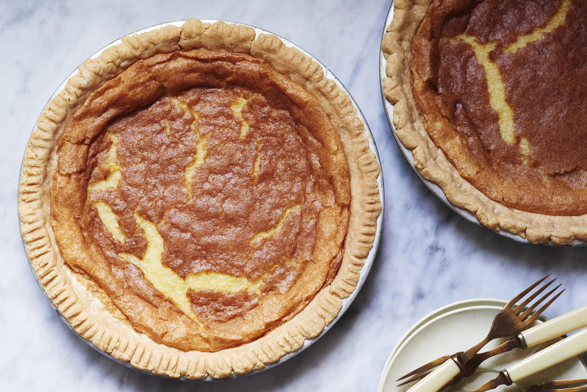

Lemon Chess Pie

Ingredients:
- 1/2 cup Butter room temperature
- 2 cups Sugar
- 3 tablespoon Flour
- 3 ea Egg
- 1 1/2 teaspoon Vanilla
- 1 1/2 teaspoon Lemon Extract
- 1 1/2 teaspoon Butter Flavoring
- 1 each unbaked pie crust (9oz)
Steps:
- Preheat oven to 350 degrees.
- Cream butter and sugar, then add the flour
- Add eggs, one at a time, beating after each egg
- Slowly beat in the buttermilk and the flavorings, mixing well
- Pour into pie crust and bake for 55 minutes
- The middle may be a little soft when you take it out, but it will firm up as it cools
.